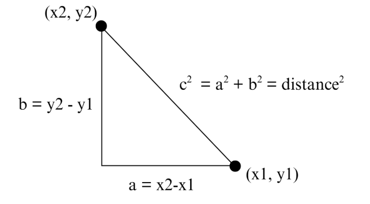
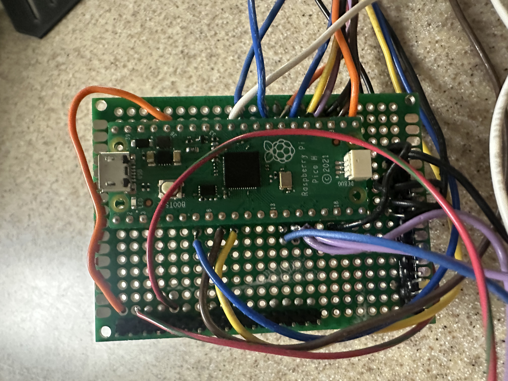
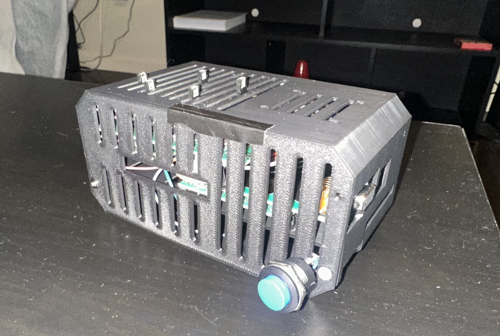
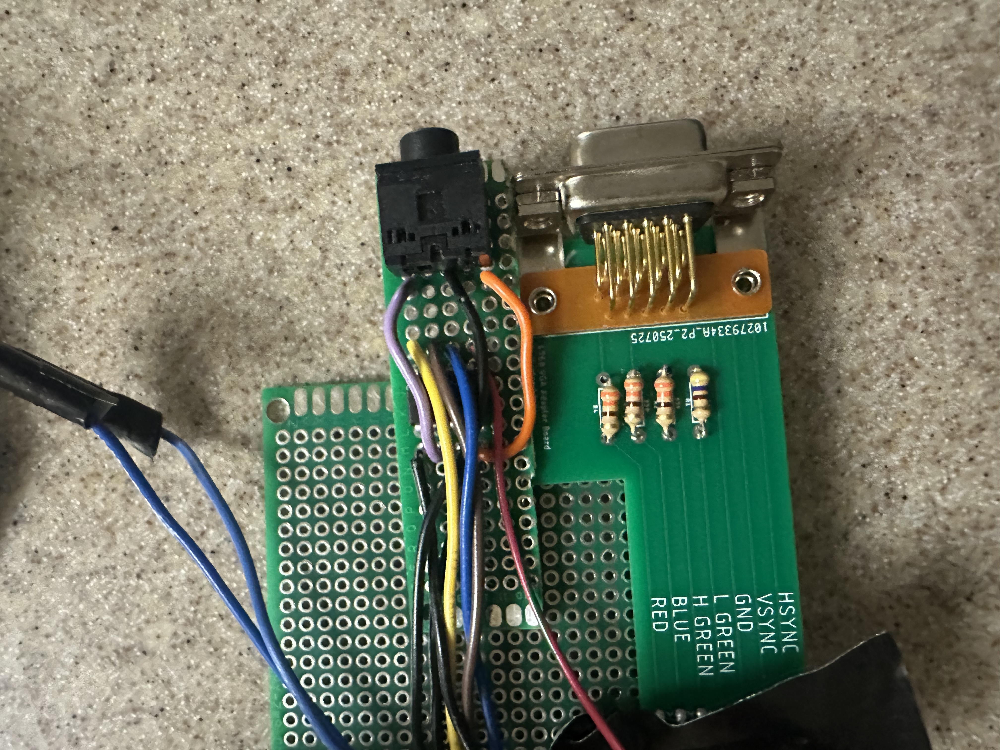
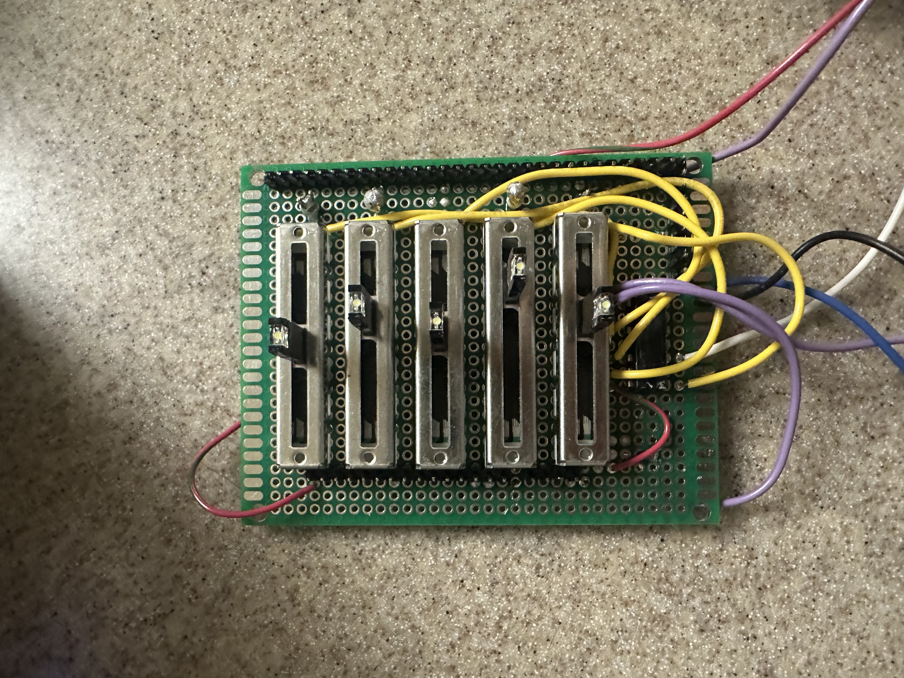
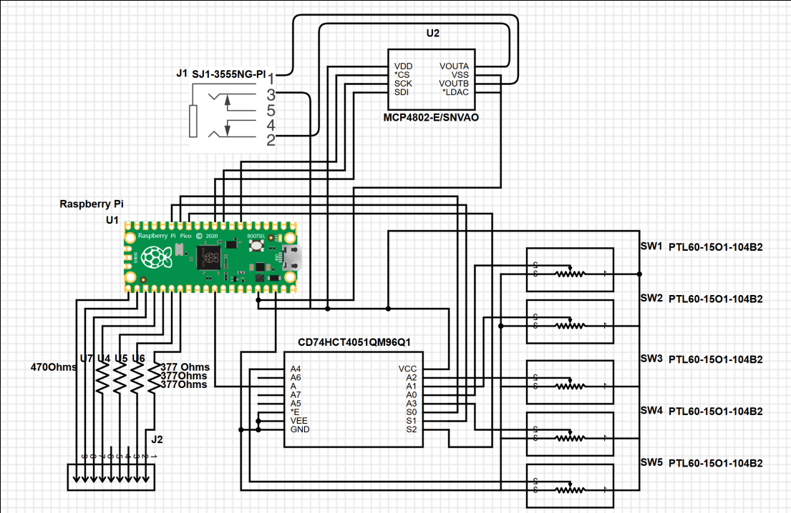

Our final project is a stochastic, agent-based epidemic simulator with adjustable parameters through physical sliders and displayed via VGA on a 640 x 480 screen alongside statistical graphs demonstrating the spread of the disease.
Epidemic simulations can be divided into two broad philosophies: deterministic SIR (Susceptible-Infected-Recovered) models and stochastic agent-based models. In SIR models, differential equations are matched to the desired modeled scenario, which are then solved to show the result of the epidemic. It is deterministic because the result does not change per run. An agent-based simulation prescribes behavior parameters to each agent (in our case, balls representing people), which then are simulated to interact. Some randomness is then incorporated to make each run unique, determined by each step of the simulation, thus stochastic. However, in the long run, total runs will converge to the average expected behavior.
We chose to tackle simulating an agent-based model on the RP2040’s limited hardware. We chose this over the SIR based model because we wanted to create a simulation that is both interactive and educational, allowing the user to play with the relevant parameters and observe how their combined effects can affect how an epidemic spreads, and its results. We also implement spatial (tree) and temporal (auto-scaling population distribution graph) data displays in order to better represent the larger changes in the system.
We were primarily inspired by the UI/UX experience in the Youtuber 3Blue1Brown’s video on epidemic simulation, as well as our own lived experiences of the Covid-19 pandemic. We did not examine his software design so as to not plagiarize, and only aimed to create a similar UI/UX experience at the surface level.
We separate the balls into 12 color-coded, separate grids in order to simulate real-life neighborhoods/cities/countries (places of congregation). Two graphs then demonstrate the temporal and spatial changes of the simulation. The top graph is a tree graph showing how the disease spreads from person to person by generation, as well as which grid each ball is currently in. The bottom graph is a time versus population distribution graph that shows the change in percent of people who are susceptible (green), infected (red), recovered (blue) and dead (dark blue). It automatically rescales as time goes on, enabling an overall view of the simulation’s entire timeline. It can capture roughly two minutes of data.
Where we took design liberty is in the implementation, as 3Blue1Brown’s implementation was done in Python, an entirely different resource environment compared to C on the RP2040. Programs in Python run on a modern computer have access to infinite CPU resources, RAM, and program memory relative to the RP2040. Our program must be efficiently designed, conservative in memory usage, and concisely coded. This was a key focus from the start, as we did not know to what degree the RP2040 could actually simulate something similar to the video’s model. For a project of this scope, essentially no hardware/software tradeoffs have to be considered in Python (within reasonable limits), so it was not designed at all with the RP2040 in mind.
There are a diverse number of individual methodologies as to designing agent-based epidemic models. We chose to employ a combination of simple probability measurements, as well as collision physics simulations to model our parameters. The choice of using balls moving around in grids is, as mentioned prior, sourced from 3Blue1Brown’s design in his video. We then model human movement within a community as ball interactions, allowing us to use modified collision physics simulation code to model our various parameters.
Collision physics simulation can easily be modified to simulate a variety of other effects when its structure is examined. Fundamentally, it is an event that triggers when a ball is within a certain distance of another ball. By altering the event, involving probability as to if the event can occur, and assigning unique distances for each event, we can simulate all our desired parameters. We employ this setup for calculating infections, social distancing, and ball-wall collisions.
The traditional approach to calculating distance is using the Pythagorean Theorem.

By keeping track of each ball’s \( x \) and \( y \) coordinates in terms of which pixels their centers are occupying, we can calculate the distance between balls as prescribed in the above diagram. However, because we expected efficiency and memory to be our #1 issue, we decided to instead use the alpha beta approximation in order to avoid multiplication of large numbers.
The alpha beta approximation states that the sum of two squared values, and therefore distance squared
\[ = a^2 + b^2 \approx \alpha \cdot \mathrm{Max} + \beta \cdot \mathrm{Min} \]
, in which \( \alpha \) and \( \beta \) are set constants, Max is the larger absolute value between \( a \) and \( b \), while Min is smaller. We then only need to compare this to the relevant radius (infection, social distancing, etc.) squared to determine if two balls (or a ball and a wall) are within distance.
All probability parameters are done using simple division. We randomly generate a number between a chosen range (which is different for each parameter to create a realistic model) and if it is below the parameter probability, then the event occurs (say, death). The exact determination of what constitutes an “accurate” range was not calculated, but intuited based on our observations.
The reasoning for this choice is, for one, because it is relatively difficult to precisely model the actual probability of any given event. In our design, we are checking for infections/death etc. at \( 3\,\text{Hz} \). We picked \( 3\,\text{Hz} \) after trial and error, finding it to limit the epidemic to a desirable time frame (within a few minutes), and effectively demonstrate each parameter’s effects without things changing too fast/slow to be observed. The actual probability of an infection per ball-ball encounter is
\[ P(\text{at least 1 success in } n \text{ rolls}) = 1 - P(\text{no success in } n \text{ rolls}) \]
, in which
\[ P(\text{no success in } n \text{ rolls}) = (1 - P(\text{infection}))^n \]
and \( n = \text{num} \). We can thus see that since \( 1 - P(\text{infection}) \) is always \( < 1 \) (as all probabilities are), then as the number of rolls increase, it is far more likely for a success to occur.
We could, of course, choose to ascribe the probability to only when a ball enters another ball’s radius. However, that would also be an inaccurate model, as in real life, longer exposure time, more close contact is more likely to cause disease spread compared to a brief, distant one. Furthermore, our project goal is not to create an accurate model that can precisely predict exactly how an actual epidemic would spread. Instead, it is meant to simulate the relative relationships between each parameter in an epidemic. Thus, though we picked 3Hz subjectively, it creates a constant error across all parameter’s effects. The relative relationship between parameters, however, remains the same.
Our chosen, changeable parameters are described below. Each specific implementation will be discussed further in the program design section.
Infection Radius: How close balls must be for infection to potentially occur
Social Distancing Radius: How close balls can be before they are “repelled” (modeled as collision)
Change Grid Probability: The probability for a random ball to be moved to a new grid
Infection Probability: The probability an infection successfully passes from one ball to another
Death Probability: The chance an infected ball will “die” (no longer transmitting and becomes stationery)
Some parameters that users cannot interface with currently, but are implemented in a similar fashion and could have been wired to a switch are: Vaccination Percentage, Infection Delay, Vaccination Infection Probability, and Infection Duration.
One key software trade off is whether to employ 2, 3 or 4-bit color with the VGA. Experience has shown that after sufficient optimization, the key limitation to the scale of the simulation both temporally (in terms of the graphs) and spatially (the number of balls) is a lack of memory space on the Raspberry Pi Pico board. By increasing the bits used for color, we effectively increase the space each pixel takes up in memory for ALL pixels. The easiest solution is to reduce our palette for optimization. However, we ultimately decided not to reduce our palette, and maintain 4-bit color, giving us a choice of 16 colors for animation. While optimization was important, we recognized that our goal was to provide a visualization of disease spread. The less colors we had, the harder it is to distinguish different colored traits from each other. (e.g. infected from susceptible, or which grid a ball belonged to on the tree graph) In the end, we ended up utilizing every color available, demonstrating that this was a necessary sacrifice of optimization.
Another tradeoff we decided on was which parameters are user-changeable, and which are not. The RP2040 only has 4 ADC (analog-to-digital) channels, which are required if we want to read voltage readings from slider switches to change parameters. While theoretically we could hook up a mux to each of the 4 ADC channels on the RP2040, and thus ascribe a value to each, this was not realistic for us to build within the project time frame. Due to further limitations of our enclosure, we ended up only having 5 slider switches hooked up to a single 8-to-1 multiplexor. The RP2040 then sweeps through the inputs of the external multiplexor to read 5 switches in a single ADC channel. We ultimately decided on the five we chose as the most noticeably impactful of the simulation, and forgoed more subtle parameters such as the infection rate for vaccinated individuals (we hard set it to 0).
See Appendix for pre-emptive measures of tradeoffs we did not successfully implement.
The enclosure we used was found online and under a Creative Commons (4.0 International License), which permits non-commercial usage with attribution. The original design and creator can be found at:
https://www.printables.com/model/409654-raspberry-pi-4-ssdhdd-case
The recurring theme of our software design boils down to information management. The key challenge in an Agent-Based Model is keeping track of each agent’s parameters, updating them as necessary, all within the limited hardware of the RP2040.
We immediately ran into issues at the start with this approach (we did not have grids at the time). Because we could not localize a given ball to any specific part of the screen, we had to search through every pair of balls when checking for infections. This proved to fail with only a meager 100 balls, in which infections would not occur because by the time the sweep has reached the specific pairing of ball IDs, they are no longer in proximity. To resolve this, we implemented two features: the grids system. This way, for a given ball, we only need to sweep through the balls that’s in its grid, greatly reducing the runtime.
The grids system assigns each ball to one of twelve grids, to which they are spawned in at the grid centers with a small random velocity to create stochastic modeling. The assigned grid number then determines the x and y coordinates at which the ball is repelled by the grid walls, which are calculated from the grid number.
Despite seeming simplicity, the implementation of the grids and related features (travel, wall detection, color) proved to be complicated when achieved with C on the RP2040 due to the lack of native dynamic arrays. That is, C arrays have a set size that is decided when an array is initialized. For small features, we can simply create a larger-than-needed array.
The grid system proved particularly problematic. For example, in order to sweep through the other balls in a ball’s grid when checking for infections, we need to be able to determine both which grid the ball is in, along with which other balls are in said array. This requires both an array keeping track of each ball’s grid number, but also an array per grid keeping track of the ball IDs in it. All of this, of course, had to be updated live whenever a ball changes grids.
To implement this within limited memory, we created pseudo-dynamic arrays using malloc() and realloc(), two native methods in C that allows us to allocate a designated memory block that functions similar to an array. It can then be resized by reallocating a new memory block of the new size, before moving the data over. To achieve this, we wrote custom functions appendGrid() and popGrid(), the former which resizes up, then adds a specific ball ID to a specific grid array, and the latter removes a specific index in the grid array, before resizing down.
This proved particularly difficult to implement for many reasons. Firstly, memory allocation issues are hard to debug, as they tend to manifest as the program freezing due to some key memory being overwritten. This symptom is incredibly hard to diagnose, and so often debugging boils down to trial and error, as well as deploying new features in small chunks. It is unhelpful that this issue can be caused by a variety of issues. Any error in the size of the allocation, which array is allocated, the order of variable assignments can all cause this issue.
The sizes of the arrays were a key obstacle, as they cannot be determined from an array alone, but must be kept track of separately so that appendGrid() and popGrid() knows what size to reallocate to. In early development, we decided to keep the size of a grid array in the 0th index of itself. This design remains in parts of our code, but ultimately caused lots of errors because any for loop indexing error could overwrite the size, thus breaking the appendGrid() and popGrid(), thus causing stalling issues. (We thus transitioned to structs later on for other parts that required dynamic arrays) A significant portion of our development was thus spent on implementing dynamic arrays correctly.
We initially organized agent state using separate static arrays (one array for all x positions, one for y positions, one for velocities, colors, infection timers, and etc.) because this is simple and fast on the RP2040. However, once we introduced neighborhoods, we needed each grid to store a changing list of which ball IDs were currently inside it. Since C does not provide true dynamic arrays, we then moved to manually managed dynamic arrays using malloc()/free() so that each grid’s list could grow and shrink as balls moved between zones. While this enabled the grid system, it also introduced complexity and debugging difficulty because allocation bugs can silently corrupt memory and crash the program. To make the agent-side logic cleaner and reduce the risk of desynchronization across many separate arrays, we ultimately standardized the per-agent state into a single Boid struct, which bundles position, velocity, zone membership, color/state, infection timing, vaccination, and death flags into one coherent data record. This improved code readability and reliability because updates could operate on one object per agent rather than keeping many parallel arrays consistent.
This project uses a single main struct, Boid, to represent each simulated agent (each person/ball) in the epidemic. The goal of the struct is to keep all state that belongs to one agent in one place so the simulation can update movement, infection status, and rendering consistently. Instead of having separate arrays for position, velocity, color, infection timing, etc., the struct bundles those variables together so each boid can be updated by passing around a pointer to that boid.
The Boid struct stores the agent’s physical state: x and y represent the boid’s position on the VGA screen, and vx and vy represent velocity. All four are stored as fix15 fixed-point values. Using fixed-point math is important on the RP2040 because it avoids slow floating-point operations inside the main animation loop while still allowing smooth motion (fractional pixel velocities). In practice, the simulation updates position by adding velocity each frame, then applies wall constraints and social distancing corrections.
The struct also stores the agent’s zone membership using the zone field. The screen is divided into 12 neighborhood boxes, and zone indicates which neighborhood the boid currently belongs to. This zone membership determines which other boids the agent interacts with for infection checks and social distancing. The program maintains a separate per-zone list of boid indices, and the zone field is the boid’s label that keeps the boid consistent with those lists. When move_neighborhood() relocates an agent, this field is updated, and the boid’s index is moved between the zone lists.
For rendering and disease state, the struct contains color and old_color. Color is the boid’s current visible state (for example GREEN for susceptible, RED for infected, BLUE for recovered, DARK_BLUE for dead, and PINK for vaccinated susceptible). old_color stores what the color was in the previous frame. This matters because the animation code must erase the boid from its previous position using the correct drawing behavior before drawing the new frame. Since infected agents also draw an infection radius ring, knowing the previous color helps ensure the old ring is erased properly if a boid changes state.
The struct includes multiple variables specifically for infection timing and transmission control. infection_start_time records the frame number when the agent became infected. This enables the recovery logic to compute how long the agent has been infected and transition it to recovered once it exceeds the infection duration. If an agent has never been infected, this value is set to -1, which provides a clean “never infected” sentinel value. The field infection_cooldown is used to enforce a short delay after infecting someone, preventing an infected boid from transmitting continuously every check. This makes spread more realistic and prevents extremely fast chain reactions that would be dominated by the discrete update loop rather than interpretable epidemic dynamics.
Vaccination status is stored in the boolean field vax. This flag is assigned randomly at spawn time and remains constant. It is used in the infection model to decide which transmission probability should apply when that agent is exposed. Vaccinated susceptible agents are also drawn in a distinct color (PINK) so it is visually obvious which agents have lower infection risk. When a vaccinated agent becomes infected, the simulation updates the vaccination counter to reflect that the vaccinated pool has decreased.
Finally, the struct contains is_dead, a boolean that marks whether the agent has died. This is separate from the color alone because death has mechanical meaning beyond appearance. When is_dead is true, the boid is excluded from movement updates and disease updates; it cannot infect others, recover, or be reprocessed by the infection logic. This prevents dead boids from continuing to influence epidemic transitions incorrectly. Visually, dead boids are also colored DARK_BLUE and their velocity is set to zero, so they remain stationary on the screen.
In summary, the Boid struct serves as the core data model for each individual in the simulation. It combines motion state (position/velocity), rendering state (color), epidemiological state (infection timing, cooldown, vaccination, death), and spatial area (zone membership). This organization makes the code simpler to reason about: each update step can treat the boid as a single unit, which reduces bugs that would otherwise come from managing many separate arrays that must stay synchronized.
The ADC readings from the switches are managed on its own protothread in Core 0 at a rate of ~333Hz. Each loop, a counter counts up, going from 0 to 4, then back to 0. The counter value is then converted to binary, which is outputted through 3 GPIO pins to the external multiplexor. We then yield for 20us, allowing the multiplexor signal to settle, before we read the ADC channel pin connected to the multiplexor’s output. The value is then assigned to a temporary holder for the corresponding parameter. Digital oscillation filtering is done on all ADC values in order to remove low frequency oscillations in the analog values from inherent noise. We purposefully slowed down this thread to 333Hz rather than the system clock (250Mhz) as well in order to further filter out noise.
Infection in our simulation is modeled as a local, proximity-based transmission event that only occurs between agents that are currently in the same neighborhood (zone). Each boid belongs to one of 12 zones, and the program maintains a per-zone list of which boids are inside it. This matters for performance and realism: instead of checking every boid against every other boid globally, the simulation only checks pairs within the same zone, which both reduces computation and represents “community clustering” (most infections happen within a local group).
At initialization, all agents begin as susceptible (drawn green), except for a single randomly chosen patient zero (drawn red). The simulation then repeatedly runs infection checks at a controlled frequency. Rather than testing infection continuously every frame, the code uses a fixed infection-check, which checks every few frames. This makes the epidemic unfold on an observable time scale and avoids infections happening “too fast” simply because the VGA loop runs quickly. Conceptually, each infection check acts like one discrete “chance” for transmission while two agents are close.
A transmission event occurs when a susceptible (or vaccinated) agent is within an effective infection radius of an infected agent. The effective radius is based on the infection-radius parameter plus the boid’s physical radius, meaning the simulation accounts for the fact that the agents have nonzero size. If two agents remain close across multiple checks, the code will evaluate transmission repeatedly, which implicitly models longer exposure time increasing risk.
When a susceptible agent is eligible to be infected, the simulation applies a probability rule. The probability used depends on whether that susceptible agent is vaccinated or not: unvaccinated agents use the “normal” infection probability, while vaccinated agents use a separate (typically lower) probability. This allows the model to demonstrate how vaccination changes transmission outcomes without requiring a complex biological model.
Two additional rules prevent unrealistic behavior. First, newly infected agents have a cooldown before they can infect others again. This prevents the simulation from instantly infecting everyone immediately and makes the transmission chain more readable and realistic (spread takes time). Second, once an agent has been infected at least once, it is marked as “active” for the transmission network. The code uses this to avoid repeatedly re-infecting the same person for the purposes of the infection tree and keeps the tree structure interpretable as a record of first infections.
Finally, the simulation includes explicit cross-community spread using neighborhood movement. At random times, one agent may be relocated to a different zone based on a movement probability. This is important because if zones were perfectly isolated, outbreaks would remain trapped inside one zone. Allowing occasional movement creates realistic “bridges” between communities and lets the model demonstrate how mobility strongly increases outbreak size and speed.
Social distancing in our simulation is implemented as a local collision-avoidance/separation rule that reduces close clustering of agents. Conceptually, instead of letting boids pass through each other or remain tightly packed, each boid actively maintains a minimum separation distance from nearby boids in the same zone. This separation distance is controlled by a “social distance radius” parameter that can be adjusted during runtime.
The social distancing routine is applied during the motion update. For each boid, the program checks the other boids in the same zone and determines whether another boid is too close. Rather than requiring exact collision math, the implementation uses a practical approximation: it looks at the x and y separations and triggers a response if the boids are within the social-distance threshold. When a violation is detected, the boid is repositioned to the edge of the minimum-distance boundary (so it is no longer overlapping the restricted area), and its velocity is reversed. This produces a visible “bounce away” effect that prevents persistent overlap and reduces sustained close contact.
This social distancing mechanism directly impacts infection dynamics because infection requires proximity. With larger distancing radii, agents spend less time within infection range of one another, which reduces the number of repeated exposure checks and lowers the overall effective transmission rate. With smaller distancing radii, clustering becomes more common, increasing exposure duration and leading to more rapid spread. Because social distancing is applied continuously during movement, its effects are immediate and easy to observe visually. You can typically see that higher distancing values cause agents to distribute more evenly within each neighborhood cell and reduces the tight swarming behavior that otherwise accelerates infection.
Death is modeled as a probabilistic event that can occur only to agents that are currently infected. In the simulation, death is checked periodically. This is done for the same reason as infection: it makes the system behavior observable and keeps outcomes from being dominated by the speed of the simulation loop.
When the death condition triggers for an infected agent, several state changes happen immediately to reflect removal from the active population. The agent’s velocity is set to zero, meaning it stops moving permanently, and its color is changed (dark blue) to provide a clear visual indicator that it is no longer participating in interactions. The infected count is decreased, and a global death counter increases. In addition, dead agents are excluded from future infection logic and recovery logic. That means a dead agent cannot infect others, cannot be infected again, and cannot transition into the recovered category. Functionally, they are removed from disease dynamics.
The model also enforces a cap on total deaths. This cap is a design choice to keep the simulation meaningful over a few minutes: without a cap, higher death probabilities could quickly eliminate most infected agents and end the outbreak prematurely, making it harder to compare parameter effects. With the cap, death still visibly affects the epidemic, reducing the infected population and altering the SIR curve, while preserving enough ongoing activity for analysis.
In terms of interpretation, death acts similarly to an absorbing “removed” state, but it is visually and mechanically distinct from recovery. Recovery transitions an agent into a recovered state (blue) that represents immunity or removal without eliminating motion, while death transitions an agent into a fully inactive state (dark blue) that no longer contributes to contact patterns. This difference matters because recovered agents still move and can influence crowding and spatial mixing, while dead agents become stationary obstacles that can indirectly affect movement patterns in a neighborhood.
A sound effect plays when infections occur, which are created with a 12-bit DAC (digital-to-analog converter), which transforms a digital sound signal at the desired frequency into an analog output sent through the 3.5 mm audio jack. This produces a clear “thunk!” sound for each collision. To reduce CPU overhead, we leverage the RP2040’s built-in DMA (Direct Memory Access) channels to continuously deliver the correct data to the DAC without direct CPU involvement. These DMA channels handle data transfers between memory and the GPIOs, allowing audio playback to run independently of the processor.
Trial and error proved that no additional threads can be added to Core 1 besides the graphs animation thread without causing program error. Through employing both the cores of the RP2040, we are able to parallel compute parts of our program, fully utilizing our CPU usage.
Two real-time graphs are displayed on the VGA screen in addition to the moving agents: a time-series SIR graph and an infection transmission tree. Together, these visualizations are used to understand both the overall progression of the outbreak and the individual pathways through which the infection spreads. The simulation logic runs independently from the rendering logic, which allows the system to update disease dynamics continuously while the graphs reflect those changes in real time without slowing the simulation.
The VGA display is divided into distinct functional regions. The left side of the screen shows the simulated population, where agents move inside twelve neighborhood boxes arranged in a grid. Each neighborhood is visually outlined and assigned a unique color to make spatial separation and movement between neighborhoods easy to see. The right side of the screen is reserved for graphing. The upper-right region displays the transmission tree, while the lower-right region displays the SIR time-series graph. Keeping these regions fixed prevents overlap and ensures the graphs remain stable and readable throughout the simulation.
The SIR graph provides a high-level summary of how the disease evolves over time. The simulation maintains running counts of how many agents are susceptible, infected, and recovered. These values are updated whenever an infection occurs, when an infected agent recovers after a fixed duration, or when a death occurs. At each time step, the current values of S, I, and R are recorded into history arrays. These arrays allow the system to plot the entire outbreak trajectory rather than just the current state.
To render the SIR graph, the recorded history is scaled to fit within a fixed plotting area on the screen. Time is represented along the horizontal axis, with the earliest recorded data at the left and the most recent data at the right. As the simulation runs longer, the time axis automatically compresses so that all recorded data still fits within the graph boundaries. The vertical axis represents population size, normalized by the total number of agents so that the graph always ranges from zero to the full population. Each category is drawn using a different color: green for susceptible, red for infected, and blue for recovered. The result is a continuously updating plot that shows infection growth, peak infection, and eventual decline as recovery increases.
In contrast to the aggregate view provided by the SIR plot, the transmission tree visualizes how the disease spreads from individual to individual. When an agent becomes infected, the simulation records which previously infected agent caused that infection and assigns the newly infected agent a generation depth that is one level deeper than its infector. This creates a directed structure rooted at the original infected agent, often referred to as “patient zero.” Once an agent has been infected at least once, it becomes part of the tree permanently, even after recovery.
The tree visualization is redrawn continuously to reflect newly infected agents. Nodes are arranged horizontally according to their generation depth, so infections that occur later in the chain appear farther to the right. Within each generation, nodes are spaced evenly in the vertical direction to avoid overlap and to make the structure readable even when many agents are infected at the same depth. Lines are drawn between parent and child nodes to show direct transmission pathways. This layout allows the viewer to quickly see whether the outbreak is driven by long chains of infection or by many parallel infections occurring at similar times.
Each node in the transmission tree is colored based on the neighborhood in which the corresponding agent currently resides. This design choice links the structural infection data to the spatial simulation, making it easy to identify cross-neighborhood transmission events. For example, when infections jump between neighborhoods due to agent movement, the tree will show connections between nodes of different colors, visually reinforcing the role of mobility in disease spread.
Together, the SIR time-series graph and the transmission tree provide complementary perspectives on the simulation. The SIR graph captures the macroscopic behavior of the epidemic, such as growth rate and peak severity, while the transmission tree reveals the microscopic structure of spread and highlights how individual interactions contribute to the overall dynamics. By presenting both views simultaneously, the visualization makes it easier to interpret how changes in parameters such as infection radius, movement probability, or social distancing affect not just the size of the outbreak, but also the pattern through which it propagates through the population.
This portion is taken from our Lab 2 Report to provide full context.
The VGA protocol, including functions that provided basic animation functions were provided to us. The following paragraph describes not our code, but Professor Bruce Land and Professor Hunter Adams’.
The VGA protocol’s building block is the function drawPixel(), which essentially modifies the input pixel coordinate within the color signal’s character array to the input color. This array is then sent via a DMA channel to three PIO state machines on instance 0. Four bits of the character array is used to store color data. Most animation helper functions we used (drawRect(), fillRect(), drawCircle(), and writeString()) were built upon drawPixel(). However, clearLowFrame(), drawHLine(), clearRect() instead uses memset()and directly accesses the address of the VGA signal array to change it. This can only be done because the VGA character array stores neighboring pixels in neighboring addresses, so certain combinations of pixels can be changed directly this way.
The PIO state machines are state machines that can be hard coded with assembly to run code, independently of the CPU, with access to DMA channels and GPIO signals. This makes them suitable for generating the appropriate VGA signal from the VGA character array. PIO state machine 0 is used to generate the HSYNC signal and PIO state machine 1 is used to generate the VSYNC signal, both slowed to the pixel clock rate of 25MHz; that is, the rate at which the VGA display updates. PIO state machine 2 generates the RGB signals at 125MHz. (These are default values that are later changed for optimization).
The RGB signal pulls 4 bits of data from the Tx FIFO at a time, which is automatically populated by DMA 0 (itself chained to DMA 1 so that it repeatedly updates the VGA signal array). To coordinate this, the HSYNC signal is used to signal the update of a single line on the VGA display. The VSYNC signal is used to signal the update of a single frame on the VGA display. State machine 2 is controlled by both VSYNC and HYSNC to only output the RGB signal when both are active.
One recurring rendering bug showed up when we made the infection radius adjustable at runtime. In the animation loop, we draw an extra orange “infection ring” around infected boids using the current infection_radius. However, when the user changes the slider, the ring radius changes immediately, and if we only erase using the new radius, the old ring doesn’t get fully cleared, leaving behind ghost circles on the VGA display. This happened because the erase step needs to match whatever was drawn in the previous frame, not whatever the parameter happens to be now. We fixed this by explicitly tracking the previous infection radius (prev_infection_radius) and using that stored value when erasing the old ring. We also rely on old_color to know whether a boid was infected in the previous frame (and therefore had a ring drawn at all), so we only run the extra erase pass when b->old_color == RED. In practice, this ensured every frame erases exactly what was drawn last frame, even when sliders change mid-simulation.
We also ran into a noticeable ADC jitter bug when reading the five slider potentiometers through the external CD74HC4051 mux. Initially, we switched the mux select lines and read the ADC immediately, which produced unstable readings: parameters would “flicker” even when the slider wasn’t moving. This is because after changing the mux address, the analog output takes a short time to settle, and the ADC’s sampling capacitor can also hold a leftover value from the previous channel. The fix was twofold: (1) insert a short settling delay after updating MUX_A/MUX_B/MUX_C (PT_YIELD_usec(20)), and (2) perform a dummy ADC read right after selecting the channel ((void)adc_read();) before taking the “real” sample (uint16_t raw = adc_read();). Finally, we intentionally slowed the ADC thread with PT_YIELD_usec(3000) so the parameter updates happen at a stable rate instead of amplifying noise by oversampling. Together, these changes made slider-controlled parameters smooth and repeatable during runtime.
Another notable bug came from the way we implemented dynamic per-zone lists using malloc/realloc in appendGrid() and popGrid(). Each zone array stores its current length in index 0, and then actual boid IDs start at index 1. Early on, we occasionally hit random freezes or corrupted behavior (balls teleporting, infection logic breaking, or the program hanging) that traced back to out-of-bounds writes on these zone arrays. The most common cause was an off-by-one mismatch between “count” and “valid index range” during removal: if we popped an element using an index that wasn’t in [1, size], or if a loop accidentally iterated to <= size+1, we would overwrite array[0] (the stored size) or write past the allocated block. Once the size data got corrupted, the next realloc would request the wrong amount of memory and could overwrite unrelated data structures, leading to crashes that were hard to reproduce. The fix was adding strict bounds checks in popGrid(), consistently treating [0] as an attribute everywhere, and being careful that all loops over zone members run from 1 to grids[g][0] only. This stabilized the grid system and eliminated the mystery lockups.
Our hardware design includes: a Raspberry Pi 2040 on a Pi Pico board, a MCP4822 DAC, a CD74HC4051 8-1 ADC Multiplexor, a 3.5mm audio jack, 5 10kOhms slider potentiometers, 1 reset button, 3 protoboards, a VGA PCB (designed and provided by Professor Hunter Adams), and a 3D printed enclosure.
All of our designs were done on breadboard, then hand-soldered in order to improve connection quality, and longevity of the project. We aimed to minimize space usage, and layered our protoboards in order to save space while leaving access for the micro-usb port, the VGA port, and the 3.5mm audio jack. We put insulating tape between each protoboard in order to prevent unwanted electrical connections.


There are 6 pins required to communicate via the VGA protocol with the screen: 4 colors (RED, GREEN (low), GREEN (high), and BLUE) and two synchronization signals (HSYNC and VSYNC). (See Diagram X for pinouts). These pins are connected to a custom PCB board with 330 Ω resistors soldered in series with the BLUE, RED, and GREEN (high) signals and a 470 Ω resistor in series with the GREEN (low) signal.
These signals then connect to a VGA male head, which can be connected to a monitor via a VGA cable. The resistors, combined with the internal resistance of the display, decrease the input (3.3 V) to 0.7 V at the output voltage. A different valued resistor is used on GREEN (high) in order to differentiate the two signals, since 3.3 V is too high for the display and could damage the circuitry.
Since there are four bits of data available for the color, this means that the total color signal is a \( 4^2 = 16 \)-level, 25MHz signal. The synchronization pins are command signals: VSYNC determines when new frames are updated and HSYNC determines when each row of pixels within that frame is updated. The display resolution is 640 × 480 pixels.

We connected 3 of the GPIOs of the RP2040 to the binary select pins for a 8-1 ADC Multiplexor so we can correctly sweep through each of the mux’s inputs. The output of the mux is then connected to the correct input GPIO pin on the RP2040. An ADC multiplexor must be used and not a digital one (such as the 74LS series) as we are passing analog signals through the mux.
The five slider switches we used are 10kOhm potentiometers. We decided to use these over the traditional dial potentiometers to better visualize the maximum and minimum of the changeable parameters. These potentiometers are powered by the 3.3V rail off the RP2040, with the divider pin connected to the mux’s inputs. As we found digital filtering was sufficient in this case, we did not use any analog filtering.
Originally, we planned on employing more ICs in order to minimize the work done by the Raspberry Pi Pico, as well as an opportunity to learn about different circuit designs. This plan involved generating a clock signal with a Pierce oscillator circuit, which would then be fed to a 4-bit counter. This 4-bit counter would thus count at the input frequency and be able to sweep through the 8-1 multiplexor entirely independent of the RP2040. Ultimately, we were not able to debug this design in time, and chose a simpler implementation.

In order to reset the simulation and load new programs onto the RP2040, we wired an external button to the RUN signal (pin 30) and ground (pin 28) so that we do not have to reach into the enclosure to reset. Though power cycling could work, using the RUN signal is friendlier on both the RP2040 and the user.
No AI tools were used in the design, implementation, debugging, or writing of this project. All work was completed independently by the team.
At 30 FPS, we are able to simulate a max of 800 balls before frame rate drops. However around 200 balls can be displayed before the tree graph overflows.
Throughout testing, the system exhibited stable and responsive behavior with no visible flicker, tearing, or hesitation during normal operation. VGA timing remained consistent, and drawing was synchronized to the display refresh to avoid artifacts. User interactions through the potentiometer sliders resulted in immediate and smooth parameter updates, demonstrating good interactivity. The use of concurrent execution which included separating simulation updates, ADC input handling, and VGA rendering into different protothreads and cores, we were able to allow the system to remain responsive even as computational load increased.
The system maintained reliable timing and signal generation across subsystems. The VGA output adhered to expected horizontal and vertical synchronization timing, producing a stable display with consistent geometry. Audio feedback generated during infection events produced audible tones at the intended frequencies, with smooth envelope shaping and no noticeable distortion. While the epidemiological model is not intended to be numerically predictive of real-world outbreaks, the simulation accurately reflects the designed probabilistic rules and timing relationships, and parameter changes consistently produce the expected qualitative effects.
Safety was explicitly enforced through both hardware and enclosure design choices. All electronics are fully contained within a compact enclosure, preventing users from accidentally touching exposed pins or circuitry during operation. Only the necessary external connections (power, video, and audio outputs) are accessible, and these require no internal access to use. All interactive controls are limited to external sliders, which are soldered securely to prevent loosening or shorting. The enclosure was sized to tightly fit the boards, preventing internal movement or strain on connections during handling or transport.
The device was designed for ease of use by both the developers and other users. No prior hardware or software knowledge is required to operate the system: users simply connect the required cables and adjust sliders to explore different epidemic parameters. During informal testing, users were able to understand the effects of infection radius, movement probability, and social distancing through visual feedback alone, without additional explanation. The combination of clear color coding, real-time graphs, and physical controls resulted in an intuitive and accessible interface.
Overall, the system demonstrates strong performance, stable real-time visualization, and safe, user-friendly operation. While visual scalability is limited by the available screen space for the transmission tree, the simulation itself remains performant well beyond the range required for effective demonstration of epidemic dynamics.
Overall, our project fitted our original vision: a user-friendly, interactive agent-based disease simulator that was intuitive to use and understand. However, there were many ambitions during the design process that we were unable to include in the final project due to time and budget constraints.
One of the main challenges in our design was balancing model complexity with real-time performance, memory usage, and visual clarity. Although the simulation could computationally support several hundred agents at 30 FPS, practical limits were reached much earlier due to both visualization and memory constraints. In particular, the infection transmission tree became visually crowded at around 200 agents, making it difficult to interpret individual transmission paths even though the simulation itself continued to run correctly.
Memory usage was also an important consideration. Each agent stores position, velocity, infection state, timing information, and relationship data for the transmission tree, and additional memory is required for history buffers used to plot the SIR curves over time. As the number of agents and recorded time steps increased, memory consumption grew accordingly. These constraints influenced design decisions such as limiting the number of stored history samples and capping certain behaviors to prevent unbounded data growth. These limitations highlight an important tradeoff: increasing realism and scale does not always improve usability or interpretability. In future versions, memory usage could be reduced through more compact data structures, dynamic removal of old history data, or simplifying the transmission tree representation.
Some software features we’d have liked to implement are: resizeable grids, pre-programmed epidemic events with set parameters, vaccination rates, vaccination effectiveness, and more. We’d also have liked to implement a more unique quarantine system, as currently, the closest approximation we can achieve is to increase social distancing radius when the disease has spread far. It would be interesting if balls cannot leave a grid after a certain percentage of the grid is infected.
In terms of hardware, besides the designs that were ultimately left out mentioned prior, we’d have also liked to design our own enclosure in the future. Due to both members having no CAD experiences, we ultimately chose to open to use CAD design someone else made after attempting to learn the software ourselves. Furthermore, we’d like to secure the boards through screws in the future, so that the design is more robust.
Our UI/UX design is inspired by, and must be credited to Youtuber 3Blue1Brown. We chose to reverse engineer it, however, and not examine his software implementation but entirely devise our own instead. All other code was written by the lab members, and referenced Hunter and Bruce’s demos and libraries. The enclosure was sourced from an open-source Creative Commons Attribution 4.0 design, credited at https://www.printables.com/model/409654-raspberry-pi-4-ssdhdd-case.
The group approves this report for inclusion on the course page.
The group approves the video for inclusion on the course youtube channel.

Yuchen Yang: Primary soldering and design of: grids system/grids traveling, dynamic arrays & related, dynamic parameters software, hardware
Michelle Dong: Secondary soldering and design of: infections, social distancing, deaths, boid (ball) structs, sound effects
Debugging was split evenly between group members as needed.
PMC — Mathematical Models of Disease Spread
CDC — Explainer: Transmission Models
TI — CD74HC4051 Technical Docs
{kind=link}
{kind=link}